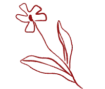

Jeg har udviklet og kodet et mobilsite med udgangspunkt i det udleverede wireframe og layoutdiagram. Websitet blev kodet mobile-first med tekst og billeder, og jeg indsatte mit eget foto med tekst på min_computer.html. I arbejdet har jeg anvendt grids ud fra layoutdiagrammet og stylet sitet med CSS, hvor jeg har brugt én CSS-fil, farver, to fonte samt margin og padding for at skabe et sammenhængende og funktionelt design. Sitet er bygget, så det fungerer både på mobil og desktop, og det færdige website er uploadet via GitHub med et link til aflevering. Websitet består af fem HTML-sider.
TEMA 2
Løsning
Process
Tidligere i tema 2 havde vi arbejdet med opgaver, der indeholdt grids, så vi havde allerede lidt erfaring med at strukturere indhold og forstå, hvordan rækker og kolonner blev brugt i et layout. Dette hjalp os i studiestartsprøven, da vi arbejdede med at omsætte wireframe og layoutdiagram til en konkret sideopbygning. Vi anvendte grids og CSS-styling, farver, fonte, margin og padding for at skabe et sammenhængende og visuelt klart layout, og de tidligere erfaringer med grids gjorde det lettere at strukturere indholdet effektivt.
Websitet blev kodet med HTML og CSS, så det fungerede på både mobil og desktop. Vi sørgede for, at designet var responsivt ved hjælp af breakpoints og media queries, og alle visuelle og funktionelle elementer blev implementeret, inklusiv vores eget foto. Til sidst blev websitet testet i forskellige skærmstørrelser for at sikre, at layoutet fungerede, når man lavede skærmen mindre. Det færdige website blev uploadet via GitHub, og vi afleverede et link til sitet.
Læring
Gennem arbejdet med mobilsite-projektet har jeg opnået en bedre teknisk og metodisk forståelse for processen fra det udleverede wireframe og layoutdiagram til et færdigt kodet website. Jeg har fået erfaring med at anvende grids, CSS-styling, farver, fonte, margin og padding til at skabe et sammenhængende layout. Jeg har også arbejdet med responsivt design, hvor det fungerer både på mobil og desktop. Gennem processen har jeg styrket min forståelse af grundstrukturen af en hjemmeside og fået indsigt i, hvordan visuelle valg, layout og tekniske løsninger spiller sammen for at skabe en funktionel og brugervenlig brugeroplevelse.